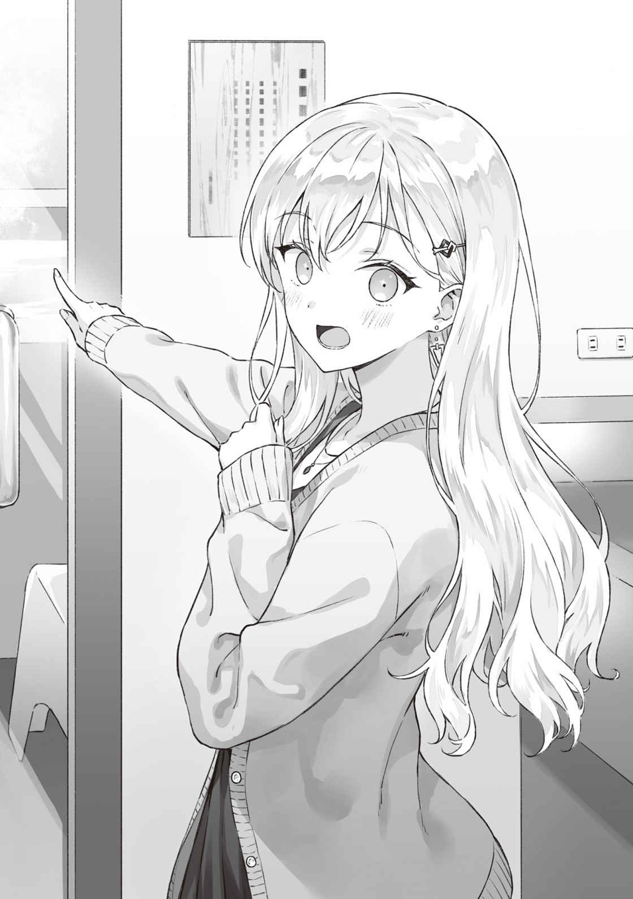
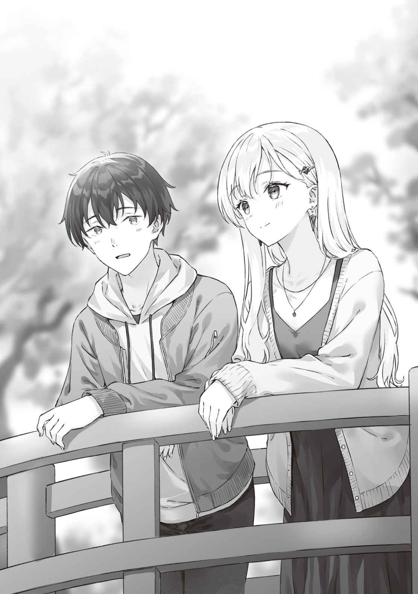
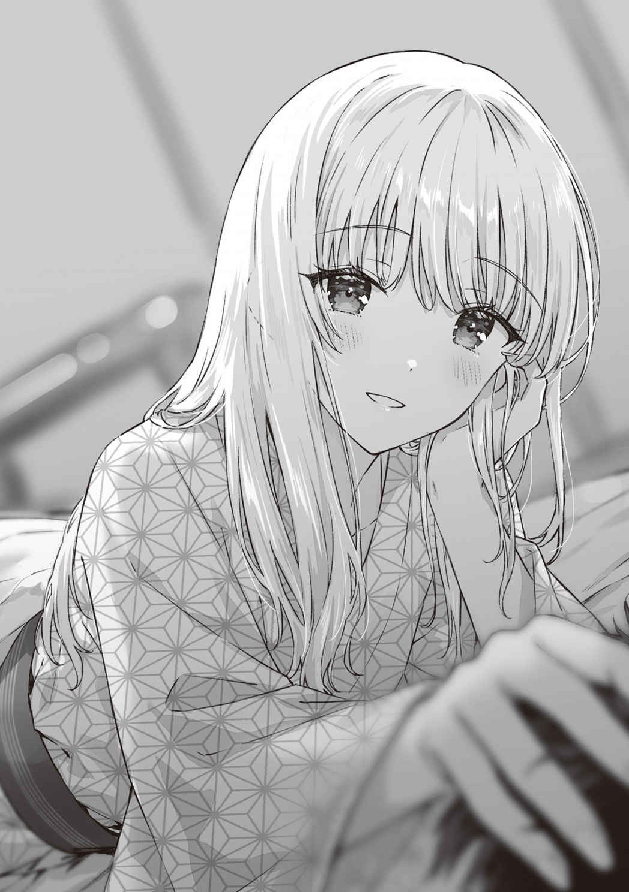

●10月30日（土曜日）
「そうっとね、そうっと。お
「わかってる」
土曜日はたっぷり睡眠が取れるからと、
ノブを音を立てないように
冷たい風が開けた扉の隙間から流れ込んできて肌に刺さる。今日は10月30日だ。太陽が地平線から顔を見せるのは東京ならば６時頃になる。俺と綾瀬さんが家を出たのは、日の出からわずか30分ほどしか
まだ夜は明けきっておらず、外廊下に出ると、西のほうの空に薄墨色の夜が残っていた。
綾瀬さんが通るまでドアを開いたままで支えておく。
「んしょ。っと、ありがと」
「持とうか？」
「転がすからだいじょうぶ」
綾瀬さんの荷物は赤いトランクひとつにまとめてあった。コンパクトだが、海外旅行にも使えそうな大きなトランクだ。どこかで見たことがあるなと思っていたけれど、すぐに思い出した。修学旅行のときに使っていたやつだ。
エレベーターを降りてマンションを出る。
窓際に座った
「天気がよくてよかったね」
「右側のボックスに座れば富士山が見えるはずだけど。まあ、海もきれいだし」
「充分。それに私たちは勉強しに行くんでしょう？」
「効率を上げるには、気分をリフレッシュさせるのも大事だよ」
「でも、時間を無駄にはしたくないから」
そう言って綾瀬さんはショルダーポーチから単語帳を取り出すと、ぱらぱらとめくり始めた。すぐに真剣な表情になり、口のなかでぶつぶつと単語を唱えだした。顔をあげずに単語帳とにらめっこをしている。さすがの集中力だ。俺のほうも自分の単語帳を出して覚えることにする。
新幹線を使わないのでお値段も片道が約二千円。往復だと約四千円となる。高校生にとっては決して安くはないが出せないというほどの値段でもない。
問題は旅費よりも宿泊費のほうだった。
こちらはさすがに一泊とはいえ安くはない。それでもバイトで蓄えていたぶんを使えばどうにかなると思っていたのだが……。
「あのね」
単語帳を見つめたまま、綾瀬さんが口を開いた。
「お金、私が返すから」
「だめだよ。約束したでしょ、ふたりで返すんだって」
「でも……」
「でも、は無し。俺だってまさか
「うー……」
「経済的にはまだまだ自立できてないんだって思い知らされたよね」
苦笑いするしかない。
まったくもって情けない限りだ。今回のプチ勉強合宿の資金は親父が立て替えてくれているのだ。
順を追って俺の頭に今日までの
そもそも先週の、郷土博物館から帰宅した翌日だった。俺はひとりで、
ここ数日、綾瀬さんの集中力が落ちて勉強が
ちなみに交渉の場に綾瀬さんが居なかったのは、万が一、
親父たちに話し始めてすぐ、亜季子さんが何かを悟ったような表情になった。だから、亜季子さんには俺の狙いが伝わったのだと思う。つまり勉強合宿というのは口実で、綾瀬さんの週末に予定を突っ込んでしまって、実父との面会予定をキャンセルさせようとしているのだと。
問題は親父のほうで、親父も綾瀬さんが実父に面会を求められていることを知っているはずだった。だが、親父のほうは表情が読めなかった。さすが元営業職で鳴らしただけはある。黙ったまま俺のプランを聞いていた。綾瀬さんがいるときにはポーカーフェイスが崩れるくせに。しかし、綾瀬さんの同席を避けたのは俺の判断なのだから、親父の相手は俺がなんとかするしかない。とにかく説得しきらないと、と必死だった。
行き先は
アーリーチェックインで早めに宿に入り、そこから丸一日、翌日のチェックアウトまでをたっぷり勉強に費やす。
そこの旅館は、勉強合宿についてあれこれ調べたときに
だが、勉強合宿の会場にもなっているような旅館で、ほどよくリラックスもできるのならば、綾瀬さんのストレス解消も兼ねて最適じゃないかと考えたわけで。
夏に調べたときの資料を引っ張り出して、親父たちにスケジュールや費用まできっちりと示して説明する。
俺の意見をひととおり聞き終わった親父が意外なことを言い出した。
それなら費用は僕が立て替えてあげよう、と。
さすがにその提案は俺たちに都合が良すぎる。落ち着いて勉強したいという気持ちに
そもそも高校生だけの宿泊を宿に認めてもらう
だからこそ細かいスケジュールや予算などをしっかりと示して
『別にあげるとは言ってないよ。貸してあげるって言ってるんだ。君たちは、まだ高校生だからね。勉強したいというなら協力するよ』
『親父……でも』
『もっと稼げるようになったら返してくれればいいさ』
『そうねぇ。
もしかしたら親父も、
しかし、さすがに全額を負担させるのは違うと思い、俺は交渉の末に交通費は自分たちが負担するという線で着地させた。
実父に会うことを嫌がるのを、綾瀬さんは、自分のわがままだと思っていた。わがままだから我慢して、無理をしてでも会わないといけない、と。けれど、その結果として綾瀬さんが壊れてしまうのならば、それは本当にわがままなのだろうか。
運動は健康の
同じように、わがままを控えることは大事だが、心の健康を害してまで我慢することは間違っていると俺は思う。
今回の最大の目的は綾瀬さんの心をストレスから守ることなのだから、俺は自分のプライドは捨てることにした。
──受験本番までもたないわ。
亜季子さんの言葉を聞いたとき俺ははっとなった。
受験のストレスのことを言っているように思えるけれど、亜季子さんは綾瀬さんが伊東文也に会いたくなくて神経をすり減らしていることに気づいている。母親である亜季子さんから見ても「もたない」ように見えたということだ。
だから──。
「俺たちはまだ高校生なんだよな……」
単語帳を
「早く大人になりたい」
「法律的には18歳から大人扱いが始まるけどね……実感ない」
「だね……」
単語を覚えながらだから、会話というよりも、心のなかがぽろっと零れるという感じの言葉を交わすだけだった。
それからまた沈黙に戻る。
顔をあげるたびに、左手に見える海が背後から
単語帳を半分ほど見直し終わったところで車内アナウンスが次の停車駅を告げる。
「あっという間だね」
綾瀬さんが単語帳をポーチに
「意外と近いね」
「だけど、
ともあれ、この逃亡作戦はひとまず成功だと言っていいだろう。
「気兼ねなく勉強合宿ができそうで何よりだよ」
「簡単に問題が解決しちゃって、ちょっと拍子抜けしてるくらい」
綾瀬さんは会いたくない父親と会わずに済んだことにほっとしているように見えた。俺はそれだけでも、この計画を実行してよかったと思う。ただ──。
「強引だったかもと反省はしている」
「……大胆、ではあったかな。でも気にしてないよ。私、人の事情も考えずに強引に迫る男性って、たまに見かけるけど正直最低だなって思ってた」
「それは俺も最低だと思う」
「でも、今回は感謝してる。強引にされてホッとすることがあるなんて、知らなかった」
「
「だから、ありがとう」
「……うん。どういたしまして」
ひとまずただの自分の空回りじゃなかったことに確信が持てて俺もホッとした。
駅からはバスに乗ることになっていた。
色づき始めた
「山の上のほう、葉っぱが赤くなってきてる」
景色を見つめる綾瀬さんの声が弾んでいるように聞こえる。
「真っ赤になるにはあと一か月はかかるかな。観光シーズンもその頃なのかも」
「でも、いまでも充分きれい。受験勉強とは関係なく来たかったなぁ」
「熱海は初？」
「うん。すごく小さい頃のことは覚えてないからわからないけど初めてだと思う。大きくなってからは旅行なんて林間学校と修学旅行だけだったし。ほら、お母さんの仕事が仕事だから」
俺はうなずいた。
お酒を出す店が繁盛するのは週末だ。だから土日にちょっと旅行というのは、なかなか難しいのだろう。実父の事業の失敗後、家族仲が冷えてからは、家族旅行ができるような状況でもなかったわけで。
──あの子が中学にあがるころって、わたし自身がとても忙しくなってしまって。
そのあたりから綾瀬さんは今のような性格に育ってしまった。つまり甘えるのが苦手で過剰なまでに独り立ちを考える気質になったってことだけど。
──
──それこそ、多少、強引でもいいから。
そんなふうに亜季子さんから言われてプールに誘ってからもう１年以上にもなる。
あのときも、初めは渋々だったけれど、現地についてからはそれなりに楽しんでくれたように思う。
そうだった。
あのプールでの綾瀬さんの姿を見て、俺は自分の気持ちに気づいたのだ。
青い空へと両手を組んで腕を伸ばして。体の力を抜いて、張っていた気をふっと
バスの窓際、移り変わる景色を見つめる
そういう場所から抜け出したいまこの瞬間の彼女は、緊張が解けたような柔らかい笑みを浮かべている。武装の内側にある顔が見えたような、そんなふうに感じる。
再婚前に
児童向けに翻訳された海外のファンタジーを膝の上に載せて読んでいる姿。撮るために声を掛けられたのだろう、上目遣いでカメラのほうへと照れくさげに視線を送る少女の顔は、楽しい時間を過ごしているのだとわかる飾りのない笑顔だった。
彼女にとってまだ世界が敵だらけではなかった頃。
そう考えると、プールに連れて行けと駄々をこねたり、アイスをねだったりという振る舞いも、暑さが苦手だったからと亜季子さんは説明していたけれど、もしかしたらそもそも綾瀬
亜季子さんもアイス、好きだしな。夏になると冷凍庫に常備されるようになったし。
「綾瀬さん、アイス食べたい？」
思わずつぶやいてしまい、言ってしまってから時と場所を思い出した。つまりはバスの車内で、周りには観光客がたくさん乗っていて、そして──。
「……秋だよ？」
窓の向こうを見ていた綾瀬さんが振り返って目を丸くしている。
「あ、うん。知ってる」
「……今日、そこまで暑くないと思うけど」
「わかってる。いや、なんでもないんだ。聞き流して」
互いに沈黙することしばし。
「観光地だったら、ご当地アイスとかあるかもなってふっと思っただけなんだ」
とっさに出た言い訳だったけれど、とりあえず納得してくれたようで、うなずきながら
車内アナウンスが流れる。目的としている停留所の名を告げた。道のりを５分ほど走っただけで着いてしまったようだ。慌てて降車ボタンを押す。
停留所で降りて細い石畳の道を上った高台の上に旅館はあった。さすがに予備校の合宿で使われているだけはある。けっこう大きい。ただ高さはさほどでもなく、五階建てくらいだろうか。雰囲気としては林間学校とか修学旅行で泊まるような大きめの旅館という感じだ。
客室だけではなく、会議室として使える部屋も幾つか備えられている。そうでなければ予備校の合宿で講義ができないということになるから当然だった。
「予約は
「了解」
つまり、この旅行中は彼女は「浅村沙季」なわけだ。
「だとしたら、家と同じように呼んだほうがいいかも」
「あー……そうか」
「じゃ、今日と明日は『悠太兄さん』だね。よろしく、悠太兄さん」
「こちらこそ。ええと、沙季」
思えばこれまで綾瀬さんと遠出をしたのは家族での帰省と修学旅行とキャンプくらいだ。
いままでは
ふたりきり──。
の、家族旅行だ。そうだった。それを忘れない
大きな自動ドアの向こう、日本式の
時刻は午前10時を回ったあたりだ。部屋に入れるのは11時からだというので、俺たちはチェックインの時間までテーブルのあるロビーで勉強しつつ待った。
案内された部屋は和室で八畳ほどの広さ。カーテンは開いてあって、南向きの大きな窓からは海が見える。
「畳、ひさしぶりだなぁ」
戸を開けて客室を
昔を懐かしむかのような言葉に、そういえば綾瀬さんは六畳一間の暮らしだったと言ってたっけと思い出す。昔を思い出してしまうなら洋間のほうが良かったか、まずかったか、と心配したけれど、綾瀬さんの笑顔を見ると、どうやらそういう居場所に対するトラウマはなさそうでほっとする。
「部屋を見ると、ホテルじゃなくて旅館だって実感するよね。その代わり勉強合宿っぽさが抜けちゃうけど。なんだかホントに林間学校みたいだ」
「夏の合宿のときは畳じゃなかったの？」
「洋間の個室。ビジネスホテルみたいなとこだった」
まあ高校生がホテルに個人で泊まることなどほぼないわけで、頭の中の知識による判断だけど。
綾瀬さんの問いに答えながら、俺は廊下から中へと荷物を運び入れる。
「あ、ごめん。自分で持てたのに」
「これくらいはついでだから気にしないで」
ありがとう、助かる。とりあえず荷物を簡単にまとめちゃおうか。わかった、それから勉強だね。などという会話をしつつ俺たちは靴を脱いで部屋にあがる。
「ただ……。もう11時だから、すぐ昼食の時間だけど。お昼をどこで食べよう」
「旅館のお食事は夜だけ？」
「夜と朝。夕食と明日の朝食が付いてて、それは宿泊費の中に入ってる。
できるだけ安い宿泊プランを考えていたのだけれど、学生的な倹約術はどうやら親目線から見ると危なっかしく感じるらしい。スポンサーから一言『食べろ』と言われては従わざるを得なかった。人類はスポンサー様には
「だれそれ？」
「大昔のＳＦ作家」
「ふうん」
またなにかの小説の話なのだろうと何となく察した綾瀬さんは気にするのをやめて部屋の中の探索を始めた。
俺は八畳間の隅に肩掛けのスポーツバッグを寄せると、とりあえず旅の疲れを
腰の横に落とした手が畳に触れて、フローリングの冷たい床の感触に慣れた俺の手のひらにざらりとしたイグサの手触りが返ってくる。なんとなく
日常ではないからかもしれないけれど。畳の部屋には畳の部屋の面倒くささもあるのだろうし。たぶん、自動掃除ロボットは置けないだろうしなぁ。なにげなくスマホで検索してみたら、最近のロボット掃除機は和室もだいじょうぶ、という書き込みを見つけて世の進歩についていけてないのは俺のほうかと驚いた。
「
洗面台のほうへと消えた
「何か変な風呂なの？ って、木の風呂だ……」
「お風呂のお湯、温泉なんだって！」
壁に貼られた注意書きを指さしながら綾瀬さんが言った。
部屋に内湯がある。そこまではありふれているだろうが、さすが温泉街。内湯にも温泉を引いてあるとは。大浴場だけかと思っていたけれど、もしやひょっとしてこれが温泉地の旅館というものなのか。
「さすが
「すこし硫黄の匂いがするね」

蛇口をひねって流した湯に鼻先を近づけながら
「ってことは、大浴場に行かなくても、部屋に居ながら温泉に入れるってことか」
「それはそれでもったいない気もするけど」
「だよなぁ。せっかく大きな風呂があるんだし」
日常から離れて保養地まで来たのだから腕や脚を思いっきり伸ばせる風呂を堪能したい。まあ、風呂をどうするかは後で決めればいいか。
客間に戻って窓際にセットされた向かい合わせの席に座る。
残念ながら、さらに手前まで視線を引くと、砂浜ではなく
「と、今日の本題を忘れちゃだめだよね」
綾瀬さんが言って、とてとてと畳の上を歩いてトランクへと向かう。勉強道具を引っ張り出したのを見て、俺も自分の問題集とノートを出した。
ローテーブルの端と端に座椅子を置いて俺たちは勉強を開始した。
これはいちおう勉強合宿なのだ。
綾瀬さんはどうやら歴史の復習をしているようで広げたワークブックの端にちらりとお寺と仏像の写真が見えた。得意科目を伸ばして盤石にしようってところだろうか。
俺のほうは数学の演習問題に取り掛かることにした。集中して物を考えるにはちょうどいい。
しばらくは順調に解いていったのだけれど、途中で難問に引っかかった。
要約すると、『加法定理を証明せよ』という問題だ。
定理で何かを解くのではなく、定理そのものの証明、か。
記憶が飛んでいた。授業か参考書で確かにやったことのはずで、苦戦するような問題ではないはずなのだが。
単位円の中に三角形を描いて、ああでもないこうでもないと繰り返したあげくに設問の設定時間を越えてしまい、それでもなおしつこく考えたものの脳が沸騰しそうになってきたので諦めて答えを見た。
「あー……。なる、ほど」
答えを見れば、加法定理の説明をされたとき、どうしてその式が成立するかを示すために教師が板書した内容と同じだと思い出せる。しかし、人間というのは便利な公式を得てしまうと、しばしばそこに至る過程を忘れてしまうものなのだ。
俺は復習がてらにノートに書き写しながら証明をゆっくりと追いかけていく。証明された後の定理だけ覚えてても意味ないよな、と反省する。
たとえば、と頭の隅で思う。
今日も散々利用したスマホの地図アプリにはＧＰＳが利用されている。そんなＧＰＳが成立するためには静止衛星軌道上にある人工衛星からの信号が必要だったりする。そして赤道上空の高度約３万６千キロメートルに静止軌道ってのが成立しえると知るためには、地球が球体であるということや、万有引力の法則が成立していることが条件になるはずで、けれど俺たちが地図アプリを利用しているとき、そういった技術発展の
日常生活の全てにおいて道具の成立過程を知っておく必要はないけれど、そういう過去の積み重ねの上に今の便利グッズがあるということを心に
過去の積み重ねの上に現在があるのだ。
ちなみに人工衛星には相対論効果が働くので静止衛星を軌道上にぴたりと静止させる
おかげで俺たちは道に迷わず
などと、壮大すぎる妄想が
１９９９年・東京大。
あー……。
「あ」
思わず声が出た。
午後２時５分と読める。
集中するためだろう、
「なに？」
「いや。時間が」
「えっ？」
綾瀬さんも時計を確認して驚いた顔をしていた。
「もうこんな時間!?」
「お昼って頃合いじゃなくなっちゃったね……」
言った途端にお
「なにか買ってこようか」
「私も行く。ちょっと休憩したいし」
すこし歩けばコンビニでもあるだろうと俺たちはとりあえず旅館を出た。
コンビニに着いた。
夕食までの時間を考えて、俺たちは「名物」とでかく書かれたポップの下に置いてあった「
ふたりでこのくらいでちょうどいい。それに
フロントで鍵を受け取ってから部屋に戻ろうとしたら、旅館の
「ちょっと時間を忘れてて」
それから、ああ、と得心したような表情へと変わる。
「お勉強の
「こちらに居らしてすぐにも、お勉強なされてましたものね。おつかれさまです」
そう言って頭を下げられてしまうと、「いえそんな。それほどでも」と恐縮するばかりだった。どうやらロビーでの待ち時間の行動もしっかりと見られていたらしい。そしてすかさず褒めてくる。さすが接客のプロだ。
それにしてもこの女将さんは泊まり客ひとりひとりの情報をどこまで頭に入れて応対しているのかと、感心してしまう。毎日何十人と居るはずなのに。すごい。まあ、アーリーチェックインを選んだ上に、さらに到着直後から勉強してたら目立ちもするか……。
というか、そもそも兄と妹が受験勉強の為だけに熱海に一泊しにきました、という部分だけを取り出して聞いたら、どこの貴族かと思うかもしれない。実際には俺としてはそこそこ切羽詰まった気持ちが背後にあったわけだが。
「もうお庭はご覧になられました？ 気分転換によいですよ」
「えっ？ ……庭、ですか」
聞けばこの旅館には庭園があって自由に散策できる、ということだった。
女将さんと別れてから、俺たちはせっかくだからと教えてもらった庭をすこし歩いてみることにした。夏だったら暑さで弁当が傷んでしまうだろうからいちど部屋に戻っただろうけれど、今の時期ならすこし散策するくらいなら問題ないだろう。
宿のまわりをぐるっと取り巻くように設置された平たく丸い踏み石を伝って、俺たちは庭園を歩いた。
石畳の道の左右には芝生が敷かれていて秋も深まっているというのに緑色を保っている。芝生の向こうには庭木として
「かわいい」
「餌を購入して、あげることもできるんだって」
池のほとりに立てられた看板にはそんなことが書いてある。
高台の端のほう、北側には背の高い木も植えられているようで、その向こうに見える山の景色に紛れ込むようにして葉をやや黄色に色づかせていた。おそらくこのあたりの葉はもう一か月もすれば真っ赤に染まるのだろう。すでに山の上のほうはだいぶ赤い。
「もうすこし秋も深まっていたら、もっときれいだったかもしれない」
「でも、これくらいの色合いの葉っぱもいいよね。景色もいいし。空気もおいしい」
深呼吸している
「ありがとう、
橋の欄干にもたれつつ綾瀬さんが言った。
わざわざ周囲の目を
「まあそこまで気を使わなくても誰もいないけどね、ここ」
もうすぐ客の入れ替わるチェックインの時間だからだろうか。庭園を散歩しているのは俺たちだけだった。
念のためだからと言いつつ、綾瀬さんは池を見つめながらぽつりと
「ほんとに、ありがとう……。ここんとこ、ずっと勉強に集中できてない気がしてたんだけど、今の３時間はすごく頑張れた。久しぶりに『しっかり勉強した』って感じ」
「それはよかった」
「いつも、気を使って色々してくれてありがたいなって思ってる」
「まあ、好きな人を助けたいと思うのは、当然のことだから」
一瞬だけ綾瀬さんと俺の視線が絡み合った。
目を
泳ぐ鯉の一尾がすいっと潜った。大きな口から小さな泡が立ち昇っている。
「
「解釈がむずかしいこと言うね」
家族愛でも隣人愛でも、
「兄でしかないのは、俺はちょっと困るかな。『好き』が兄としてのものだけだったら、それでよかったんだけど」
自分の気持ちをうまく説明しようと理屈をこねたら、かえって恥ずかしい
「
「まあ、たしかに今は兄としてここにいるんだけどね」
「あー……」
きょろきょろと辺りを見回して誰もいないことを確認すると、綾瀬さんがすっと顔を近づけてきてささやいた。
「じゃあ、兄じゃない浅村くんの私に対する好きって、どういう感じの好き、なの？」
どきりと心臓が音を立てて動いた。
軽い上目づかいで綾瀬さんが言う。
「ごめん、いじわるな質問をして。でも、最近ときどき考える」
視線を
「お母さんは何がきっかけで、あのひとを好きになったのかって。どういうふうに、あのひとはお母さんを好きになったんだろうって」
あのひと、と
風が鳴らす葉の音よりもさらに小さく、俺の耳に届くか届かないかの声だった。
「あのひとの振る舞いで覚えているのは別れる直前の怖い顔と怒鳴り声だけだから。あのひとがお母さんと出会った頃の気持ちをぜんぜん思い浮かべられない……」
過去は遠く記憶はおぼろげなのだと綾瀬さんが言った。
「俺が綾瀬さんを好きになったきっかけを知りたいってこと？」
「うん。浅村くんだって、最初は他人のように私に接していたでしょう」
「そうだね」
血の
だからこそ、１年半前のあの日あのときに彼女とうまくやっていくために俺は共同生活を送る良き他人となろうと決意したのだ。だからこそのすり合わせだったし、だからこその適切な距離感の維持だった。
それがうまく機能しなくなったのはいつ頃からだったか。
「好きになったときのはじまりの感情って消えちゃうのかなって」
「そんなこと……」
「でも、気持ちって見えないでしょう。お母さんはどうしてあのひとを好きになったのか。そしてあのひとはどうしてお母さんを好きになったのか。そのはじまりの感情って絶対にあったはずなんだけど……」
「綾瀬さんはそれを知りたい？」
「うん。覚えておくことって、大事にしておくことって、関係を長く続けようと思ったら必要なんじゃないかって。あのひとはそれを忘れてしまった。歴史的建造物みたいには、保存したり記憶したりしておけなかった」
綾瀬さんは視線をあげて旅館の建物を見る。それは俺たちが泊まっている建物とは別の棟でかなり古そうな建物だった。おそらくは昭和の頃に建てられたのだろう。旧館、と書いてあった気がする。設備が古く、客室もあまり数がなくて、そちらに泊まる客数は多くない。
「宿として使われることが減ってもきれいにしておいてるよね。ちゃんと手入れされてるのがこうして離れて眺めていてもわかる。屋根の瓦も欠けてないし、窓のガラスは新しく入れなおしたものなんだろうけど、くもりひとつなく磨かれているし」
老舗の旅館が長年ずっとここに在りつづけるのは──時代を経ても、これまでの歴史を保存しつづけておけるのは──旅館を建てたときの、そのときに訪れた客たちに良い旅館だなと思ってもらったときの感情を、旅館を営むひとたちが大切にしているから。
建物を見て、またここに訪れたいと感じるその気持ちを大事にしているから。
綾瀬さんは古い建物を見ながらそんなことを言った。
だとしたら──。
人間関係だって同じじゃないのかな、と。
「好きになったときって、相手がどんなふうに見えてると思う？」
「どんな……」
俺は自分のときのことを思い出そうとした。
「思い出せないの？」
「いや、思い出せないというか。実は……わからないんだよね」
綾瀬さんが半眼になった。
待って。そういう意味じゃないから。
「ええと、ちょっと落ちついて聞いてほしい」
「まあ……聞くけど」
唇がやや
「ひとがひとを好きになるときって、必ずしもドラマティックな出来事を伴うとは限らないと思う」
俺は１年半前にも考えたことを思い出した。
現実の恋愛はドラマのラブストーリーのように恋に落ちた瞬間がきれいに決まっているとは限らないんじゃないかって。あれは、読者に恋愛ドラマの進行をわかりやすく伝えるためにイベントとして差し挟まれているのであって──。
「現実にはそうそうドラマティックなイベントなんて起きないし」
「じゃ、じゃあ。好きだと気づいたのってどういうきっかけで？」
「えっ……」
「まさか。覚えてない、とか」
「いやいやいや！ 覚えてる。もちろん覚えてる」
俺が彼女を好きだと自覚したのは──。
「昨年、みんなでプールに行ったときだよ」
「えっ……」
意外そうに目を
どうしよう。自分が好きだと気づいた瞬間の心の動きなんて当の相手に話して聞かせるものなんだろうか。世間一般的にこういうのはどうなんだ？
いや、世間はどうでもいいか。
いま大事なのは悩める
好きになったときに相手がどう見えるかっていうことだった。
「あのプールで遊んでいたときに」
「遊んでたとき……ゲームをしていたとき？」
「いや、ええと……」
そんな細かく話すことになろうとは。
「俺たちふたりきりで休んでいた時間があったでしょ」
「ああ、
「そう、あのときだったかな」
ふたりきりで休んでいたときに、大きく伸びをしてリラックスしている綾瀬さんを見つめていたときだった。
「へとへとに疲れてたんだけどね。
最後のほうはやや早口になったし、見つめてくる
「へえ……」
えっ、なに、その反応。
「そういう感じだったんだ……」
と言われても、そういう感じ、がどういう感じにあたるのか俺にはわからない。
「おかしい、かな」
綾瀬さんは慌てたように首を横に振った。
「おかしくない。おかしくなんてないよ」
「まあ、だからいつの間にか好きという感情を抱えていたっていう感じだからさ。相手を好きになった理由ってそこまでちゃんと考えたことなかったかな」
「むう」
不満そうだった。
「じゃ、じゃあさ。そういう綾瀬さんのほうはどうなの？」
切り返した俺の問いかけに、今度は綾瀬さんが言葉を詰まらせた。
考え込むような表情を見せる。
「私は……」
「うん」
「それは、うん、そうだね、最初から
「俺くらいだったら、そのへんにいくらでもいそうだけれど。ええと、じゃあ、俺のことがいいひとに見えてたとしてさ。さっきの話だと、それをずっと覚えていれば綾瀬さんは俺をずっと好きでいてくれるってことになるけど」
「尊敬はしつづけると思う」
「つまり、尊敬できるなって自覚したから好きになったの？」
「あー……。それはちがう、かも」
そこから声を小さくして何か言った。
「うん。私も、浅村くんが好きだって自覚したときのことは、ちゃんと覚えてる。でも、そうだね……。いつからその気持ちが始まったのかは、よくわからない、かも」
「じゃあ、お互いさまってことになるんじゃないかな」
それもそうか、と言いつつ、綾瀬さんはまだ納得したという顔にはなっていない。
「でも、聞きようによっては
あれ？
いや、たしかにそう聞こえないこともないこともないけど。
「ちがう、よ」
「水着姿を見てドキドキしたって聞こえたし」
「否定すると
保存しておきたい記憶ではあるが、そういうことではない。
「きっかけの話だよ、きっかけの。聞いてほしい」
「聞くけど」
裁判官に陳述を許可された被告の気持ちがわかるような気がしてきた。
「だから、ええと……。
「ああいう姿？ 水着？ そこまで刺激的だった、とか」
「そっちは忘れて。そうじゃなくて──」
言語化だ、言語化。あのときの気持ちを思い出せ。
このままだと誤解されたままだ。
「──俺は、綾瀬さんのああいうリラックスした姿を見たときに、すごく懐かしいような気持ちを感じたんだ」
「なつかしい……」
「どこかで見たようなって言ってもいい。改めて考えてみたけれど、おそらくあのプールの休み時間のときの綾瀬さんは、すごく気を
綾瀬さんが首を
「どこで？」
「子どものとき」
「……存在しない記憶を
「いやいや。ちがうって。ほら、綾瀬さん、顔合わせの前に写真を見せてくれたでしょ」
厳密に言えば見たのは
やや上目づかいで照れくさそうにカメラに顔を向けていた。
その表情が、プールで伸びをしていたときの綾瀬さんと重なったのだ。
「小さい頃の私とそっくりだと気づいて、好きだって確信したの？ えっ、浅村くんってそういう趣味」
断じてちがう。
「人の趣味を否定するのはマナー違反だからしないけれども……そうなんだ……」
「ちーがーうー。だから聞いて」
幼顔が好きだと言っているわけではない。
「俺は、あの写真の表情を思い出して、目の前の綾瀬さんの中にも、確かに子どもの頃の綾瀬さんがまだ残っているなって思ったわけで」
「つまり
「いやいやいや。顔だけならどっちかといえば今のほうが──じゃなくて。俺の心の中でその瞬間に綾瀬
「りったいてき？」
「そう。目の前の女の子が生きている人間である。それは見ればわかる。でもこういう人なんだと腹落ちするっていうのは別だよ。ひとつ解像度が上がるっていうのかな。他の誰かじゃない、綾瀬沙季という個人がすごく実在感をもったのがあの瞬間だった」
武装する、ということはアバターを
見せたい自分を見せるということ。
見せたくない自分を隠すということ。
でも、ひとがそういう他人に見せたい部分だけで成り立っているはずがないなんてことは考えればわかることだ。アバターはアバターであって、本人の一部でしかない、それもまた本人ではあるのだが。
そして四六時中をいっしょに暮らしている家族には、そのひとの仮初ではないあれこれが意外とバレてしまうものだ。良いところを見せたいと張り切ったあげくに
亜季子さんとの様子を思い返してみるに、親父の背伸びなんて、ぜんぶバレてるんだろうなと思わされる。親父もそれで
親父に比べれば、綾瀬沙季の武装はほぼ完璧だった。
だからこそ鬼の観察眼の持ち主である
俺も、最初は綾瀬さんに対する評判を
さすがにいっしょに暮らすようになってから、俺はすこしずつ、綾瀬さんの武装姿ではない様々な一面に気づかされることになったけど。
音楽を聴いてサボっているのかと思ったら将来の
それでも、俺はこの美しい
義理とはいえ妹なのだからという気持ちも大きかった。
その境界線が壊れたのがあのプールの片隅だった。
あのとき、時間が止まったように感じた。
解像度をひとつ増したレンズに映った姿が俺の心に迫ってきて。
他の誰よりも
あらゆる論理をすっ飛ばして出てきた「好きだ」という言葉の、そこに至るまでの心の道筋が改めてちょっとずつ見えてきたような感覚を俺は味わっていた。これが「言語化」というものか。
「誰かの言葉にあったんだけど。恋ってのはするものじゃないんだってさ」
「恋する、なんて言うのに？」
「その人の言うことには、恋というのは落ちるものらしいよ。いつの間にか本人さえ知らないうちに深く深く気づけば落ちている。きれいすぎる言葉だなと思ってたけど、いまの俺にはなんとなく納得できる言葉になっちゃってるね」
「ふーん」
「だから、俺としては好きになった理由はひとつに絞れない。気づいたときにはもう綾瀬

「まるごと？」
俺はうなずいた。
武装姿でもなく。幼女姿でもなく。そのふたつが
そっか、と、欄干にもたせた腕越しに池を
旅館に戻ってフロントの前を通りかかったとき「おかえりなさい」と声を掛けられる。
庭園のことを教えてくれた
「ただいま。ありがとうございました」
「とても素敵なお庭でした」
綾瀬さんが
「家族でご利用できる貸し切りの露天風呂もありますよ。そちらもよろしければお試しになってみてくださいね」
「露天風呂。いいなぁ」
綾瀬さんが興味を示した。
露天というからには景色を見ながら風呂に入れるということだ。大浴場も捨てがたいがおそらくはより開放的な気分を味わえるだろう露天風呂も捨てがたい。
「ご
「家のお風呂みたいに……」
「ええ。大浴場だと時間によっては混みますし、そのせいでリラックスできなかったりしますからね。時間内であれば、おうちで使っているように交互に入れますから。３つありますけど、どの露天風呂からも海が見えるようになっていて眺めもいいですよ」
「家族で入れるってことは、男女の別がないっていうことですか」
「はい。お部屋に泊まっている方同士でしたら、ごいっしょに使えることになっています。ご夫婦とか恋人同士で借りる方も多いですよ。内湯ですとあまり広くはないですから」
どうですか？ と笑みをまぶして言われてしまった。
いやしかし、つまりこの貸し切り露天風呂は夫婦や恋人がいっしょに入れるように設定しました──と言っていないだろうか。
「……海が見えるお風呂……」
「よろしければこのままお取りしておきますよ。今ですと──」
「６時から１時間ほど空いています。予約は必要ですけれど、別料金などは発生しませんから。お取りしておきますか？」
「お願いします」
えっ、と戸惑う俺をよそに段取りは踏まれていく。
「はい。承りました。時間内であればどちらが先にお入りになってもだいじょうぶですよ」
「ありがとうございます。よかったね、
「あ……うん」
ふたりとも満足げに笑みを交わしあっているのだけど……いいのかこれ？ 女将さんはどう見ても旅館のサービスをアピールできたことで喜んでいて、綾瀬さんは、眺めのいい露天風呂に喜んでいる。俺だけか、混浴可能な露天風呂に戸惑いを感じているのは。
……まあ、だいじょうぶか。
親に金を出してもらって兄と妹として
これが本当の家出だったら──たとえば駆け落ちみたいな、恋人同士の逃避行であれば、旅先で転がりこんだ旅館でいちゃつくというイベントが発生したりもするかもしれない。あげくにしがらみの末に心中するなんていう展開の物語はよくあるけれども。
俺たちの旅館生活に待っているのはリアルな受験勉強なのだ。現実とはどこまでいっても現実的なのである。
そうして俺たちは部屋に戻って弁当を半分に分けた。
箱には
しばらく休んでから貸し切り風呂の予約時刻まで勉強だ。
俺たちはまた部屋のローテーブルへと戻る。
次は物理を、と取り掛かろうとして先ほどずっと数式を見ていたことを思い出した。
社会でもやるか。
もともと共通テストでは公民科目を受ける必要があった。その上、オープンキャンパスで社会学に興味を
参考書に引いたアンダーラインを再確認していきつつ、覚えることを小さく口の中で声に出さずに何度かつぶやく。無音にしておかないと綾瀬さんの気が散るだろうと思った。とくに大事そうなところはノートに書きだしたりして記憶に刻みつける。
丸暗記では意味がないので、たとえば選挙制度に関してだったら、できるだけ歴史的な流れを追いかけて覚えることにした。まあ、未来にありえそうな架空の社会制度まで考えを及ぼさなくていいだけＳＦを読むよりは楽だったりする。本が御禁制品になった世界の倫理観とか、アンドロイドが電気羊の夢を見るような世界まで思い描かなくていいのだ。現実に存在しえた社会制度で重要なものなんてそこまで数は多くない──。
「……らくん。
──はっ。
意識を現実に引っ張りもどされて顔をあげれば窓の外はすっかり暗くなっていた。
「浅村くん、たいへん！ もう時間すぎてる」
綾瀬さんの声に慌てて時刻を確認する。
予約した露天風呂の開始時間をすでに30分オーバーしていた。
やってしまった。
懲りないな俺たち。本日二度めだ。
「あと30分か。これはさすがに時間が足りないね。綾瀬さん、行っておいでよ」
ひとりだけならともかく交代して入っている時間はない。
「そんな、私だけなんて」
「でも、露天風呂を楽しみにしてたのは綾瀬さんだし。これから交代で入ると時間が短くて忙しすぎる」
「私ひとりだけそんなのずるいし」
「いや議論してる時間ないでしょ。ほら、行かないと」
「でも……」
立ち上がりかけた中腰のまま綾瀬さんは考え込み、それから俺の腕を
「いこ！」
「えっ」
「ここで議論してるとほんとに間に合わなくなっちゃう。とにかく行ってから考えよう」
言いながら追い立てられ、俺は何が起こっているのか把握する前に旅館の案内図頼りにずんずん進む綾瀬さんに手を引かれていた。
綾瀬さんは時々止まれなくなるのだ。
まあでも露天風呂を見るくらいはしてみたいのも本音ではある。
部屋に置かれていたタオルセットだけを持って行ってみると、部屋番号が書かれた使用中の札が掛かっている。俺たちの泊まっている部屋の番号だから、無事に予約が取れていることはこれで確認できた。
入り口に掛けてある
着替えはもちろん別なわけだ。よく考えなくても当たり前だ。野湯じゃあるまいし。
「もしかして中も分かれてたりするのかな。それならふたりいっしょに入れるけど」
「どうだろう」
貸し切り混浴露天風呂なんだから、推測するかぎりは中でひとつになっているのだと思うけれど。
「見るだけ見てみようよ。ちょっと
「まあ、見るくらいなら」
前のめりな綾瀬さんに押され気味にうなずいた。温泉に興味津々なせいだろうか？ いつもより彼女のテンションが高い気がする。
左右に分かれてからとりあえずタオルセットをロッカーの籠に放り込み、俺は脱衣所と風呂場を
黒い夜が湯船の向こうに見える。
露天というだけあって、左右は生け垣になっているものの、天と、海の見える正面側は外へと開かれている。風が吹き込んでくるたびに立ち昇る湯けむりがゆるゆると
高台だからだろう、海までにさえぎる建物もなく、すでに夜だから月の光が反射する海は黒々としていた。まだ６時半とあって街の明かりが海岸線沿いに
風呂場の明かりは最小限に抑えてあるから空に輝く月がよく見えた。うっすらと漂う雲が月の輝きを返して光の羽衣となって漂っている。
「わあ！ お風呂、大きい！」
声の方に顔を向けると、戸一枚分ほど隔てたすぐ隣に、同じようなガラス戸をあけて風呂場を覗き込み目をきらきらさせている綾瀬さんの姿があった。綾瀬さんのテンションが異常に上がっているような。
「ね？」
「そうだね。我が家の風呂の……何倍だろう。これだけ広ければ手足も思いっきり伸ばせそうだ」
「あのマンションのお風呂も大きいけどね」
「そう、かな」
生まれてからずっと同じ湯船に入ってるわけで、他と比べたことがないからわからない。
イマドキのマンションの備え付けの風呂ならば標準的だと思うのだけど。
そう考えて、それから
「もしかして、綾瀬さんのおうちはお風呂、かなり狭かった？」
「うん。手足をぎゅっと縮めないと入れない感じ。
それは狭い。
なるほど。大きな風呂を見て綾瀬さんのテンションが上がるのもわかる気がした。
まあ、大きい風呂は確かにいい。
「やっぱり露天はいいよなぁ。夜景もきれいだし、海もなんとか見える。風を感じることができるのも
湯船にたゆたう湯けむりが10月の風にさらされて立ち昇る
「入りたい！ 浅村くんも入りたいでしょ」
「それは、まあ」
とはいえもうそんなに時間は……。
「せめて綾瀬さんだけでも」
「浅村くんも入りたいんだよね？」
綾瀬さんはぐっと身を乗り出すと、きょろきょろと浴室を見回した。
「洗い場も両方にあるんだ……」
「そう、だね」
男性用のドアから入った場合はすぐ右手に、女性のほうは左手に洗い場が作られている。
「はい……ろうよ」
「ん？」
「もったいないよ。ほら、湯船も大きいし。端と端にいれば気にならないでしょ。時間もないし、ぱっと入って、さっと出ちゃえば、気にしなくてもいいんじゃないかな」
「えっ」
いやいや。
そんなわけない。
「せっかく予約したんだし」
「それはまあ、そうだけど」
「
穏やかな
「じゃあ、
そう言ってガラス戸を閉めて引っ込んでしまった。
なんてことだ。
本当にいいのだろうか？ まあ確かに、どう考えても体を洗って湯船に
心を決めよう。
俺は思考を放棄して服を脱ぎ、脱衣所から風呂場へと入る。
まだ
さっと体を洗ってさっさと湯船に体を沈めた。
なるべく女性用の脱衣所の戸から遠いほうの風呂の縁にちぢこまって、入ってくる綾瀬さんを見ないようにと海を見つめながら背をもたせかける。かすかな硫黄の匂いと、まとわりつくような感触の淡く白く濁った湯が肌からゆっくりと体を温めてくれた。
「ああ……」
いい湯だと息をはいた。一日の疲れが湯の中へと溶けだしていくようだ。
顔をあげると、半分に欠けた月が目に映る。
きれいだな。
なにもかも放り出してこのままぼうっとしていたい。思考が絶賛逃避中だった。もう何も考えたくない。このまま温泉と一体化してしまいたい。
がらりと戸の滑る音。
石の床を
背中のほうからゆっくりと近づいてくる足音が──。
「湯加減、どう？」
「……ちょうど、いいよ」
「熱くない？」
「だいじょうぶ」
桶で湯を
「んしょ……」
「滑るから気をつけて」
「ん」
ぱしゃりと湯を
「やっぱり、いいなあ、大きいお風呂……」
視界の端に
長い髪を湯に浸けないようにだろう、頭の上にあげて髪を留めていた。顔には大粒の汗が浮かび、水分を吸ったおくれ毛がぺたりと首筋に貼り付いている。夜の向こうを見つめる綾瀬さんのすこし細められた目と息を吐き出す唇がやけに目についてしまう。タオルは湯船に浸けないように畳んで風呂の縁に置いてあった。立ち昇る湯けむりと白い湯のおかげで鎖骨から下の膨らみが見えそうで見えないのが助かった。
考えてみればおかしなことかもしれない。
綾瀬さんとはキスどころか、
それに比べれば俺と彼女の湯船の中の距離はこの広い風呂の中では充分──とは言えなくとも、まあ一メートル以上はある。昨年のプールのときを考えてみれば、
なのになぜここまで緊張してしまうのか。
だが、今はほんとうの意味で一糸まとわない姿なわけで。さすがに水着姿とまったく同じだなどとは思えない。緊張感と罪悪感とを感じてしまう。いまちょっと顔を横に向けるだけで綾瀬さんのぜんぶが見えてしまう。それは俺もか。自分のほうも見られてしまう、ということだ。
なんだかのぼせてしまいそう。湯あたりしてしまいそうだ。
「温泉……お母さんたちにも入らせてあげたかったね」
綾瀬さんの声が聞こえてハッとなった。
「だね……」
というか、本当に家族旅行だったらもっと気楽に貸し切り予約もできたかもな。家族で予約を入れていれば集中すると時間を忘れる俺たちとちがって、
だが、それはできない。
親父たちが一緒に旅行できるほどの休暇を取れないというのももちろんだが、そもそも親父たちがいっしょだったら、そこには綾瀬さんの実父──
この旅行はあくまでも、
他に選択肢はなかった。
俺は首を振ってありえたかもしれない家族旅行の幻影を振り払う。
「温泉、気持ちいいな。体がほぐれるし、温まるし」
同じ湯に
「
「ん？」
「もうちょっとそっち行っていい？」
抑えようとしていた鼓動が跳ねた。なんだって？
湯気の向こうから近づいてくる気配がした。
「あのね……」
抑えた
「ごめん、
「嘘、って？」
「昼間、すごく集中できたって言ったこと……」
綾瀬さんの言葉に俺は息を詰まらせる。
集中できてないのだとしたら、この合宿は失敗だったってことか？
「すっごく厳密に言うと、なんだけど」
「うん」
綾瀬さんはぽつりぽつりと語り始める。
俺は彼女の語りをさえぎらないよう黙って耳をそばだてた。聞いていることを示すために
「集中できた、というのも間違いじゃなくて。すっごく感謝してる。たぶん、ここ一か月でこれくらい集中できたことないって言っても嘘じゃない」
うなずいた。
「でも、ときどき。勉強と勉強の合間に……なにかとなにかの間に、ふっと気がつくと、ぼうっとしていることがあって」
ああ……なるほど。
それでね、と綾瀬さんが言う。
「何に悩んでいるかわかった気がする」
綾瀬さんはいちど言葉を切る。ためらうような気配に俺は思い切って口を挟んだ。
「伊東文也さんの、こと、だよね」
息を
「そう。やっぱり……わかっちゃうか」
「まあ、ね……」
「前にもちょっと言ったけど。私、あのひとと似てるなって」
うなずいた。
「俺は似てるとは思わないって言ったけど」
「そう。そう言ってくれて
ぱちゃりと湯面を手のひらで
「あのひとを目の前にしたら、きっと確信してしまう。私はあのひとの娘なんだ、って。そんな予感があるの。……だから、怖い」
「そんなこと……」
「わかってる。でも、不安が消えない。もしあのひとと私が同じだったら、私は、いつか浅村くんを傷つけてしまうんじゃないかって。大切なひとだったはずのお母さんを、あのひとが傷つけたように。私も、大切なひとであるはずの浅村くんを。私は、どうしようもなく負けず嫌いで、嫉妬深いから」
俺は考え込んでしまう。
あまり長く
「負けず嫌いなのは否定しないけれど……」
しかし、そこは否定できない。負けず嫌いでなければ学校で孤立しようとも武装を貫くなんてできるはずがないのだ。進学校である
綾瀬
けれど、違和感があった。
綾瀬沙季という女の子が負けず嫌いになったのは、いつからだ？
負けず嫌いな性質が父親ゆずりだと言うのであれば、遺伝による影響だと言うのであれば、生まれつきの本質がそうでなければ筋が通らない。
去年のプールでの出来事を思い出す。
あの日、俺は綾瀬さんへの恋愛感情を自覚した。それは
とつぜんの出来事だったから、あのときの俺は、何がトリガーになっていたのかが自分でもわからなかった。でもいまならなんとなくわかることがある。負けず嫌いで他人を受け付けない武装の内側に眠っていた、本当の
「──沙季ちゃんは」
「え？ 沙季、ちゃん？ なに？」
「小さい頃、幼稚園とか小学校低学年の頃の綾瀬さん──沙季ちゃんは、負けず嫌いで、嫉妬深かったのかな」
「それは……」
思い出していたのだろう、いくらか間をおいてから綾瀬さんは答える。
「違った、気がする」
「でしょ」
「待って。都合よく記憶を
「じゃあ順番に確認していこう。ひとつずつケースを挙げていくから、そのケースの場合に勝ち負けにこだわっていたか思い出して、答えてもらえる？」
「……うん」
「テストの点数」
「ぜんぜんこだわってなかった。他の子の点数なんか聞いたこともない」
「顔やスタイル」
「ぜんぜん。興味なかった」
「服のセンス」
「まったくもって。あの服カッコいいな、
「徒競走」
「こだわってた……かも？ 負けたら悔しかったし」
「悔しさは誰でも感じると思うよ。たとえば負けたら嫌になるとか、不機嫌になるとか、一番を取った子に意地悪するとか」
「しない。走るのは純粋に楽しかったし、足が速くていいな、カッコいいな、と思うことはあっても、攻撃したりはしないよ」
「ならこれも健全な範囲だね。……どうだろう、小さい沙季ちゃんは負けず嫌いな女の子だったのかな」
「……ちがう、ね」
問答を終えて綾瀬さんは細い息を漏らした。
「つまり生まれつき負けず嫌いだったわけじゃない。沙季ちゃんは素直で、自由奔放で、感性豊かな女の子だった。誰にも負けないようにって武装し始めたのは、いろいろな家庭の問題で悩むようになった後……その負けず嫌いは、後天的。遺伝子によるものじゃなく、環境によって獲得した性格なんだ」
「なんだか、見てきたように言うね。小さい頃の私のこと」
「いまの
「いまの、私にも……？」
「うん。去年のプールで
「それは、まあ、ね。
勝ち負けにこだわるマウント気質なら、絶対に勝てない相手との友達関係は継続しない。
「現代国語で俺に対策を
「……
「だったら、あの時点でもう、俺を傷つけるひとことくらいは思わず漏らしててもいいんじゃないかな」
「それは……そうなんだけど。でも──」
「負けることが嫌いなことと、相手よりも優位でなければ許せない、というのはちがうと思う」
話を聞くかぎりは
でも、綾瀬沙季はちがう。
ちがうと思う。
少なくとも以前よりも
「綾瀬さんは、伊東文也じゃない。彼のようなやり方で、俺を傷つけたりはしない」
きっぱりと言った。
「浅村くん……」
綾瀬さんの声が近く、
「肩、借りていい？」
「……うん」
そっと綾瀬さんの手が背中に触れてくる。
「もう、ちょっとだけ。このまま」
左の肩にもたれるようにして綾瀬さんの頭がことりと乗っかってきた。
「肩くらいならいつでも貸すから」
「うん……」
肩から背中にかけて感じる湯とは異なる実体あるぬくもりに心臓が早鐘のように鳴る。
すぐ近くに裸の異性がいるというだけでも、高校生男子には刺激の強い出来事だというのに、ましてやその異性は恋愛相手でもあるわけで。互いに好きと打ち明けあい、キスもハグもしたことのある女の子。
振り向いて抱きしめてしまいたい気持ちを抑えろというのが不可能に近い。
「なに？」
「ありがとう」
そう言って体重を預けてくる。
貸している肩に掛かる重みに俺は身動きもできなくなった。
そうして凍りつくように動けないでいる間に、
まあ──俺たちはこれでいいか。
ふと振り仰ぐ。
空に浮かぶ半分の月が俺たちを静かに見守っていた。
焦りに焦って着替えて部屋に戻る。
各部屋への配膳が整うのは夕方７時で、俺と綾瀬さんは辛うじて間に合った。
部屋の戸へと近づいてくる宿の給仕人が「あら？」という顔で俺たちを見る。
「すみません！ いま戻りました」
「いえいえ。これからですから、慌てなくともだいじょうぶですよ」
わざわざ俺たちが部屋に入るのを待ってくれてから、こんこんと控えめにノックしてくる。お食事のご用意ができました、と言いながらからりと
夕食は食堂ではなくて各部屋への配膳となっている。
食事のメインはやはり海の
ふと思いついて、俺は綾瀬さんに言う。
「写真、撮っておいたほうがいいかもね」
「料理の？」
俺も綾瀬さんも食べたものを写真に撮って共有したり、ＳＮＳにあげたりという習慣がなかった。だから普段だったらそのまますぐに食べていたところなのだけれど。
「勉強合宿していた証拠写真になる」
「あー……。そうか。だね。わかった」
気を回しすぎかもしれないが。念のためだ。
後で勉強している写真もいちおう撮っておくかと頭の片隅にメモを書いた。
しかし、テーブルの上の料理を見ていると、さすがにこの内容の食事は予備校の合宿では出てこないだろうな、と思う。
難しい漢字の並ぶお品書きとテーブルの上に並んだ料理を突き合わせながら、俺と
並べられている魚や山菜はどうやら地元のものらしいのだけど、どれもこれも絶品だった。白身の魚は箸でほぐして口の中に入れただけでほどけるように崩れるほど柔らかくておいしいし、秋の味覚の代表であるキノコたちは焼きたての香りを嗅いだだけでもう口の中が湿ってくる。レモンをひと絞りしてから口内に放り込んだ。
「むう」
綾瀬さんが眉をひそめて自分の箸の先を見つめている。
「どうしたの？」
「おいしい。どうやってこの味をつけてるんだろう」
見れば、綾瀬さんの箸の先には黄色い
「これ、おねがいできる？」
「え？」
何を、と問いかける前に俺の手前にあった取り皿にひょいっと
大きな貝の片側をお皿にして、その上に載せてあったやつだ。
「食べていいの？」
「ちょっと苦手で……」
珍しいことではあった。綾瀬さんが食べ物を残している場面を見たことがない。
「苦手な食べ物とかあったんだ」
「
「とくに……ないかな。でも、他の貝は食べてるのに」
「帆立ってちょっと大きすぎるっていうか、肉厚すぎる。ちょっとだけ苦手で。無理ってほどじゃないけど、ちょっとだけ、ね。嫌いなんじゃなくて苦手なだけだから。たくさん食べたくないだけで。こんなに大きなのを丸ごとはむり」
「わかったわかった。まあ、誰にでも苦手なものってあるし、無理して食べる必要はないと思う。とくに食べてくれる人がいるんだったら、ね。残すわけじゃないし」
「うん……」
すこし気まずそうにうなずいた。
「代わりになにか一品どうぞ」
「えっ。悪いよ」
「ギブ＆テイクだよ。遠慮せずにどれでも」
「どれでも……」
「これ？」
手付かずの小皿をくいっと綾瀬さんのほうへと押しやる。デザートだろうか、きれいなオレンジ色をした、四等分に切った種なし柿だった。これも秋の味覚だ。
「もらっちゃって、ほんとにいいの？」
「かまわないけど。綾瀬さん、柿好きなんだ」
「果物は基本みんな好き。柿はあんまり食べないけど。ほら、柿ってすぐに柔らかくなっちゃうでしょ」
「ああ、うん」
「おいしいとは思うんだけど、ちょっと食べづらいよね」
うなずいた。俺も嫌いではないが、リンゴや梨のようには気楽に食べられない。熟した柿は箸で
「それであまり食卓には出てこないのか……」
「食べたい？」
「大好物ってほどじゃないから、どっちでもいいかな。あれば食べる、くらいの感じ」
「私もそんな感じだけど、種なしでこれくらいに硬いのだったら好き」
綾瀬さんは大切そうに俺の押しやった柿の小皿を自分の小皿の脇に並べた。
「あのね……」
食事を進めながら綾瀬さんが言う。
「うん？」
「私、好き嫌い、ないわけじゃなくて」
ちょっと意外だった。なにしろ先ほどもちらりと思ったことだけれど、俺は綾瀬さんが食べ物を残しているのを見たことがない。そう言うと、
「それはね。手品のタネがあるんだ」
「タネ……」
とはいったい？
「料理番には特権があるから。自分の嫌いな料理は食卓に出さないっていう」
思わず箸が止まる。
「……盲点だった」
「ふふ。ずるいでしょ。あのね。実はお母さんにも、苦手なもの、あるよ」
「
「うん。でも、気づかないでしょ。だって食卓に出ないもの」
俺は好き嫌いが特にないから料理番のときにそういったことを考えたりはしなかった。でも、言われてみればそれはそうだ。
子どもの知らない大人の陰謀。子どもには好き嫌いせずに食べなさいと言ってくるし、見てると親は確かになんでも食べているように見える。しかし、料理担当者は自分の苦手なものは食卓に出さなければいいのだから、なんでも食べられるのは当たり前なわけで。
この
「
「言ってくれれば避けるようにするけど」
「それはダメ。アレルギーだったら別だけど、相手の好みをぜんぶ把握しておくなんて、無理だと思うし。好きなものだけが食卓に並ぶのも良くないし」
「──お母さんの『勧められると買っちゃう癖』って、いっつも注意してるけど、でも、あれはあれで、たまーに役に立ってるのかなって思うこともあって」
「食べたことのないものを食べられるから？」
「そう。生ハムの原木なんて自分だったら絶対買わない。私があまり好き嫌いをしないのってお母さんが時々勧められるままにヘンなのを買ってくるからだと思う。で、我が家はそれほど裕福じゃなかったから、食べないなんて選択肢はなかった」
だから、
いきなり俺の皿に載せてくるから驚いたけれど。
「もし俺が帆立嫌いだったらどうしてた？」
「そのときはちゃんと引き取って食べます。だから食べる前に
かわいいなあ。
「この旅行は勉強合宿だけど、慰安旅行を兼ねているから。これくらいなら俺は了解する。ちゃんと
「むう。……ありがと」
すこしの間だけ気まずそうにそっぽを向いて食べていたけれど、ひとり用お鍋で温められたお肉を
食べ終わって片づけてもらった後、食後のお茶を楽しむ。
それから時計の針が上を向くまでふたたび勉強モードに突入した。
ポモドーロ・テクニックの定石通りに25分の作業をしては５分の休憩を挟むを繰り返すと、２時間はあっという間だった。
たっぷり勉強漬けになれたと思う。参考書の進み具合を見る限りはいつもよりも
わずか一泊の勉強合宿だったけれど、普段よりも効率的にできたんじゃないだろうか。
って、さすがに自画自賛が過ぎるか。
ローテーブルを片付けて俺たちは布団を敷いた。
「家具なしだと八畳もあれば余裕でお布団って並べられるんだね……」
綾瀬さんの感想は過去の自分たち家族の住んでいた部屋と比べてのものだろう。六畳一間の家具付きではなかなかに狭かっただろうし、並べられないから昼夜逆転している母と交互に同じ場所に互いの布団を敷いていたと聞いている。
俺たちふたりの布団は間が三十センチほど空いていて、緑の畳が境界線のように見えていた。それがいまの俺たちの関係性を表しているようにも見える。俺たちは恋人同士ではあるけれど、この旅行中は
──結婚してもそうなるだろう、というのはさておき。
兄と妹として振る舞わなければ。それこそ実の
「あまり遅くまで起きているのも良くないだろうし。早く寝て早く起きて明日のチェックアウトまですこしだけ勉強するって感じかなぁ」
俺の言葉に綾瀬さんもうなずいた。
「それでいいよ」
「じゃ、電気消すから」
スマホを電源に
時刻は０時のすこし手前。いつもだったらまだまだ勉強をつづけていたところだ。
ぱちりと電灯を消した。
足下を照らすわずかな間接照明の明かりだけになり、俺たちふたりのいる部屋が色を
ほぼ同じタイミングで
「じゃ、おやすみ」
「ん。おやすみなさい」
声を掛け合って俺はまぶたを閉じたのだけれど……。
いつまで
電車を乗り継いでの旅行だし、一日中勉強漬けだったし、温泉にもしっかり入ったのだから、横になったら即座に寝てしまうと自分では思っていたが、深夜の受験勉強に慣れてしまった体はけっこう夜に強いらしい。
いつもだったら１時を回った頃にようやく寝る。そのことに体が慣れてしまっていた。
困った。
「眠れないの？」
綾瀬さんの声にまぶたを開いた。間接照明のわずかな光を返して天井の模様がかすかに浮かび上がって見えている。
「いつもなら勉強してる時間だからね」
眠れないとしても体を横たわらせているだけでも休息になるという。眠気がやってくるまでこうして天井を見つめていてもいいかもな。そう言おうとしたら、なにやら隣で起き上がる気配がして、こっちの布団に近寄ってくる音がした。
そうっと腕が持ちあがって俺の目の前に落ちてくる。思わずまぶたを
「
目を開けてしまった。
淡い光に照らされた彼女のからかうような表情が見える。
「子どもみたいにあやされても寝られるってわけじゃ……」
綾瀬さんは腹ばいになって左手で
右手は何度も頭を撫でている。
「悠太くんは頑張り屋でしゅもんねー」
綾瀬さんの幼児語って初めて聞いたかもしれない。
「それって、俺はかえって眠れなくなるんじゃ」
「寝つきの悪い子は文句を言っちゃだめです。ほら、まぶたを閉じて」
「……さっきのやり返し？」
綾瀬さんが薄闇の中でにっと口角をあげた。
「そんなとこ。うん。確かに私は

「まあ……わかるよ」
俺もいまちょっと悔しいし。
「ふふ。……くしゅっ」
すこし笑ったあと、
「エアコン切ってるんだから、浴衣のままじゃ体を冷やしちゃうよ」
もう10月も終わりなんだし。
「ん。じゃあ、ちょっとお邪魔して」
頭を
「布団、あったまってるね」
「
「
俺は撫でてくる腕越しに交差するようにして綾瀬さんの頭に自分の手を乗せた。
「じゃ、お互いさまってことで。沙季ちゃんもよく頑張りました。もう寝なさい。明日は早いんだから……」
言いながらゆっくりと綾瀬さんの頭を撫でる。
まるで猫のように
「おやすみ」
「ん……おやすみ、なさい。ゆう……」
それとも悠太、だったのか。
わからないまま俺も目を閉じて。
綾瀬さんの立てる規則正しい寝息が聞こえる。
いつ寝付いたのか気づかないうちに、俺もそのまま眠りの